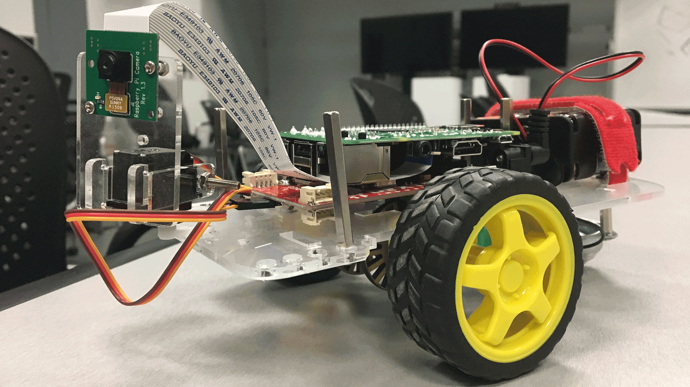
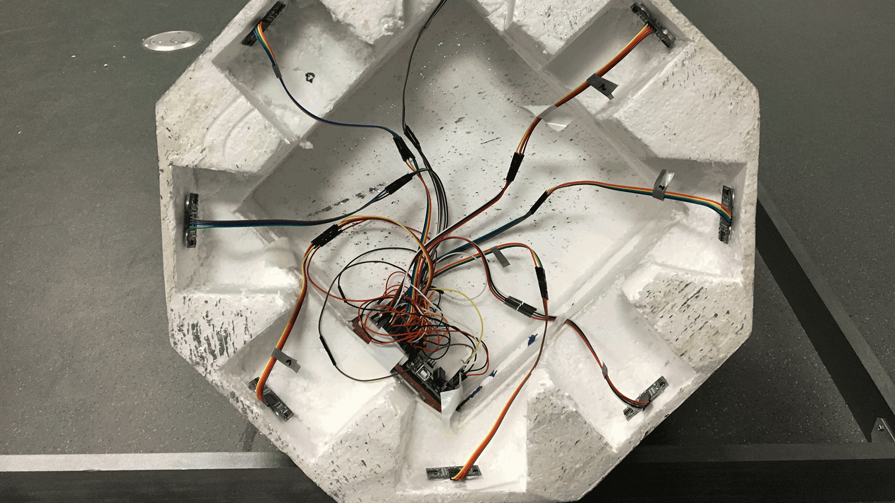
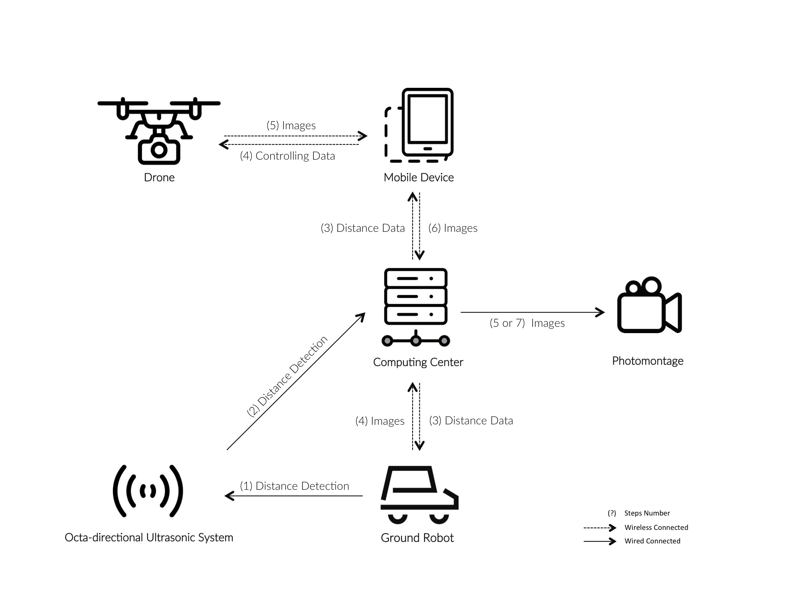

This project was about highlighting possible interactions and visuals possible between different robots within a controlled environment.
I worked on the setup of the localization system - a set of ultrasonic sensors that informs and guides robot behavior within the system.


A large challenge we faced was combining our efforts into data outputs other members could use and linking it all our efforts to the central server.
We also were given a fairly open-ended prompt: part of our focus was directing our ideation and exploring just what environment we wanted to create.